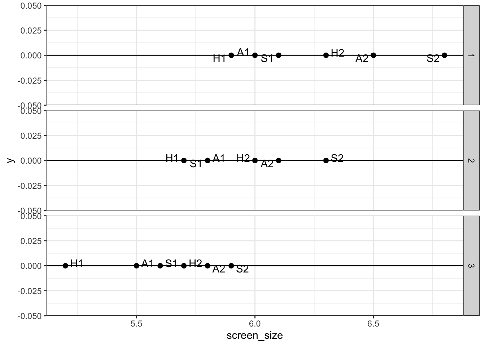
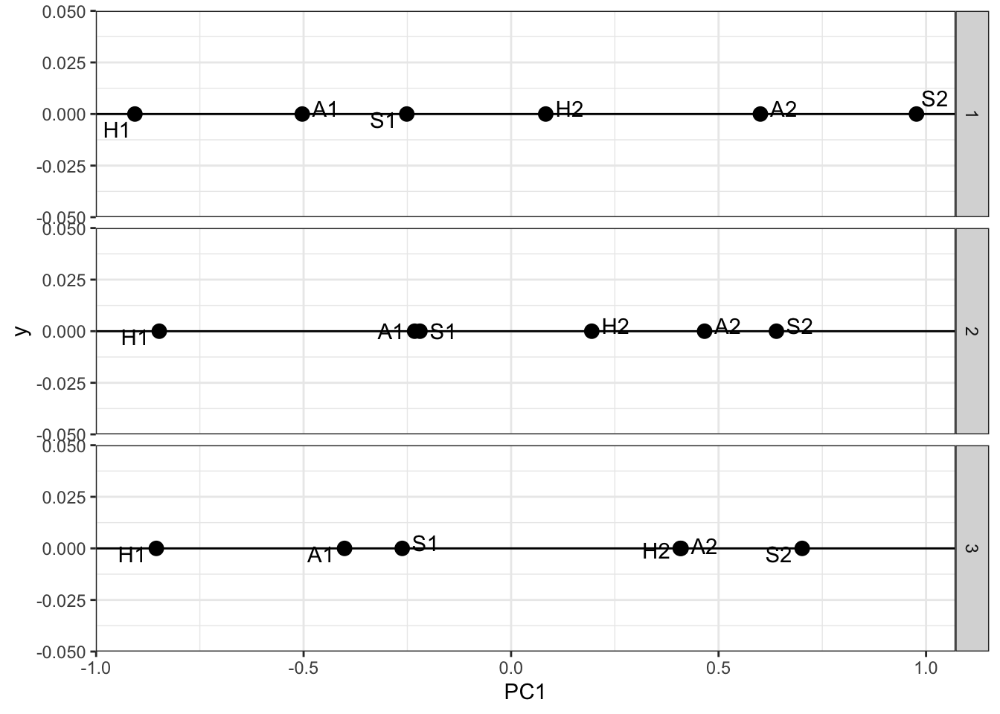

The primary goal of this project is to utilize Principal Component Analysis (PCA) for market mapping by reducing dimensionality. This method streamlines complex data sets, extracting principal components that reveal crucial variances and trends within the market, thereby simplifying the analysis and enhancing visualization capabilities.
This market analysis initiative, conducted on behalf of T-Mobile, leverages data sourced directly from the company. The research aims to discern the target demographics for various phone brands within T-Mobile’s portfolio, focusing particularly on the relationship between phone size and consumer attributes. Key questions addressed in this study include:
Are larger phones predominantly purchased by individuals with larger hands? Is there a trend towards increasing hand size over successive years? Do consumers with similar hand sizes tend to choose phones with the same screen size? Conversely, do individuals with identical hand sizes purchase phones of varying screen sizes? Over time, how does the relationship between hand size and phone size evolve?
Analysis
library(tidyverse)
── Attaching core tidyverse packages ──────────────────────── tidyverse 2.0.0 ──
✔ dplyr 1.1.4 ✔ readr 2.1.5
✔ forcats 1.0.0 ✔ stringr 1.5.1
✔ ggplot2 3.4.4 ✔ tibble 3.2.1
✔ lubridate 1.9.3 ✔ tidyr 1.3.1
✔ purrr 1.0.2
── Conflicts ────────────────────────────────────────── tidyverse_conflicts() ──
✖ dplyr::filter() masks stats::filter()
✖ dplyr::lag() masks stats::lag()
ℹ Use the conflicted package (<http://conflicted.r-lib.org/>) to force all conflicts to become errors
Rows: 3000 Columns: 19
── Column specification ────────────────────────────────────────────────────────
Delimiter: ","
chr (5): gender, discount, phone_id, brand, size_cat
dbl (14): height, handsize, age, gaming, chat, maps, video, social, reading,...
ℹ Use `spec()` to retrieve the full column specification for this data.
ℹ Specify the column types or set `show_col_types = FALSE` to quiet this message.
#map phones in 1D attribute space based on their screen sizes # create a small dataset with one row per phone sub <- cust_dat |>select(years_ago, brand, screen_size, size_cat, phone_id) |>arrange(years_ago, brand, screen_size, size_cat, phone_id) |>distinct()head(sub)
# A tibble: 6 × 5
years_ago brand screen_size size_cat phone_id
<dbl> <chr> <dbl> <chr> <chr>
1 1 apple 6 s A1
2 1 apple 6.5 l A2
3 1 huawei 5.9 s H1
4 1 huawei 6.3 l H2
5 1 samsung 6.1 s S1
6 1 samsung 6.8 l S2
# plot phones by size, one facet per yearggplot(sub, aes(x=screen_size, y=0)) +facet_grid(rows=vars(years_ago)) +# facet_grid to create separate plots by years_agogeom_point(size=2) +geom_hline(yintercept=0) +# horizontal line at y=0geom_text_repel(aes(label=phone_id)) +# using ggrepel package, adds texts to pointstheme_bw() # theme

Summary
In this one-dimensional analysis, several key trends are evident: Samsung’s larger phone models have consistently been significantly bigger than those offered by Apple and Huawei over the past two years. There is a noticeable annual increase in phone sizes across all brands. Not only are the phones getting larger each year, but the variability in phone sizes is also expanding. Despite these changes in size, the relative ordering of phones by size remains stable from year to year.
In-Depth Analysis
We will calculate the average hand size per phone, treating it as an unobserved product attribute. This metric will help us understand how different phone models potentially cater to varying consumer physical preferences, providing deeper insights into product design and market positioning strategies.
`summarise()` has grouped output by 'years_ago', 'brand', 'screen_size',
'size_cat'. You can override using the `.groups` argument.
Key Questions for Market Mapping:
Screen Size vs. Hand Size: What patterns emerge when correlating screen sizes with hand sizes?
Phone Size and Hand Size Correlation: Are larger phones preferred by individuals with larger hands?
Hand Size Trends: Is there a trend of increasing hand sizes over the years?
Consistency in Consumer Choices: Do consumers with similar hand sizes choose phones with the same screen size, or do they select varying sizes?
Changing Size Relationships: How does the relationship between hand size and phone size change over time?
What would we expect to see in a screensize x handsize map?
Screen Size vs. Hand Size Correlation: We expect to see a correlation where larger phones are preferred by individuals with larger hands.
Hand Size Trends: A potential trend of increasing hand sizes over the years could be explored to see if it aligns with the trend of increasing phone screen sizes.
Consistency in Consumer Choices: We might find that consumers with similar hand sizes consistently choose phones with similar screen sizes, or conversely, that they choose varying sizes, indicating a diverse preference range.
Changing Size Relationships: The relationship between hand size and phone size may evolve over time, which could indicate changing consumer preferences or innovations in phone design.
# Plot consumers' screensize vs handsize, facet by phone, for only years_ago==1ggplot(cust_dat |>filter(years_ago==1)) +geom_histogram(aes(handsize), bins=50) +facet_grid(rows=vars(screen_size)) +ggtitle("Hand Size Distributions by Screen Size") +theme_bw()
# Plot/map phones in screensize x handsize spaceggplot(sub, aes(x=screen_size, y=mhs)) +# geom_point() +#facet_grid(rows=vars(years_ago)) +# different plots for different years_agogeom_smooth(method="lm", se=F) +# add linear trend (ie regression) linegeom_text_repel(aes(label=phone_id)) +#theme_bw()
`geom_smooth()` using formula = 'y ~ x'
Observations Summary
Positive Correlation: There exists a positive relationship between screen size and hand size, indicating that typically, larger screens are favored by individuals with larger hands.
Imperfect Correlation: This relationship, however, is not consistent across all observations. For instance, in the third facet of our analysis:
Both S1 and H2 models have comparable screen sizes, yet the H2 model is more commonly purchased by consumers with larger hands. Conversely, the S1 and A2 models have differing screen sizes but are frequently chosen by consumers with similar hand sizes. Evolving Trends: Over time, the strength of this relationship appears to be diminishing slightly, as evidenced by a gradual flattening of the trend line.
PCA
#use PCA to reduce our 2D (screensize, avg handsize) to 1Dpca_out1 <- sub |>ungroup() |>filter(years_ago ==1) |>select(screen_size, mhs) |>prcomp()pca_out2 <- sub |>ungroup() |>filter(years_ago ==2) |>select(screen_size, mhs) |>prcomp()pca_out3 <- sub |>ungroup() |>filter(years_ago ==3) |>select(screen_size, mhs) |>prcomp()summary(pca_out1)
Importance of components:
PC1 PC2
Standard deviation 0.7015 0.06153
Proportion of Variance 0.9924 0.00763
Cumulative Proportion 0.9924 1.00000
summary(pca_out2)
Importance of components:
PC1 PC2
Standard deviation 0.5450 0.07835
Proportion of Variance 0.9798 0.02025
Cumulative Proportion 0.9798 1.00000
summary(pca_out3)
Importance of components:
PC1 PC2
Standard deviation 0.5978 0.07243
Proportion of Variance 0.9855 0.01447
Cumulative Proportion 0.9855 1.00000
# We see that one component explains the majority of variance in the data# This is because mean-handsize and screen size are highly correlated sub |>group_by(years_ago) |>summarize(cor=cor(mhs, screen_size))
# we see that the original data varied along both variables, while the rotated# data varies mostly along the first principal component# the rotated data is in pca$x# we can use the first column of x for our 1D plot# first, "extract" x into a tibble, to make it easier to work with pcs1 <-as_tibble(pca_out1$x) pcs2 <-as_tibble(pca_out2$x) pcs3 <-as_tibble(pca_out3$x)# and append these tibbles together pcs <-bind_rows(pcs1, pcs2, pcs3, .id="years_ago")# now we can plot in 1D spaceggplot(pcs, aes(x=PC1, y=0)) +facet_grid(rows=vars(years_ago)) +geom_point(size=3) +geom_hline(yintercept=0) +geom_text_repel(aes(label=sub$phone_id)) +theme_bw()

Observations Summary
Distance Between Models: The H1 model is now notably more distant from the other phone models in terms of selected attributes.
Yearly Comparison: In the first year, the A1 and S1 models were significantly further apart. In the second year, these models moved closer together. By the third year, the positioning of A1 and S1 relative to each other remained unchanged.
Summary of Market Mapping through PCA Research
This research project employed Principal Component Analysis (PCA) to simplify and analyze the complex relationships within T-Mobile’s smartphone market data. The main objective was to understand how phone size correlates with consumer characteristics such as hand size and to identify trends that could influence future product offerings.
Summary of Market Mapping through PCA Research This research project employed Principal Component Analysis (PCA) to simplify and analyze the complex relationships within T-Mobile’s smartphone market data. The main objective was to understand how phone size correlates with consumer characteristics such as hand size and to identify trends that could influence future product offerings.
Key Findings:
Positive Correlation: The analysis confirmed a positive correlation between screen size and hand size, indicating that larger phones are typically favored by individuals with larger hands.
Inconsistent Trends: Despite the overall trend, the correlation between phone size and hand size was not uniformly observed across all models and brands. Specific instances showed that similar screen sizes could attract consumers with different hand sizes, and vice versa.
Dynamic Market Behavior: Over time, the relationship between hand size and phone size showed signs of weakening. This suggests that as the market evolves, consumer preferences may be influenced by factors other than just the physical size of the device.
Yearly Model Comparison:
The distance between specific models such as the H1 and others highlighted significant differentiation in market positioning. Additionally, the A1 and S1 models showed variable proximity over three years, indicating shifts in market strategy or consumer acceptance.
Strategic Implications:
The findings from this research are instrumental for T-Mobile to tailor its product strategies. Understanding that consumer preferences are not static but evolve with time can aid in more dynamically aligning product features with consumer needs. Moreover, recognizing the diverse preferences within consumer segments can help in targeted marketing and product development efforts.
##Future Directions:
Based on the outcomes of this PCA-driven market mapping, further research could explore more granular consumer data, incorporate additional variables such as consumer lifestyle and usage patterns, and apply predictive analytics to forecast upcoming trends in smartphone design and functionality.